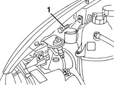
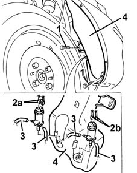
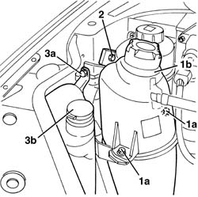
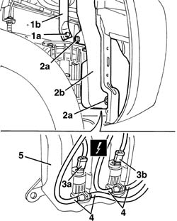

5050A10 WINDSCREEN WASHER FLUID RESERVOIR (IN ENGINE BAY) - R+R
- Path
- Procedures > 50 AUXILIARY UNITS > 5050 SCREEN WASHERS AND HEADLAMP WASH/WIPE > 5050A WINDSCREEN AND HEADLAMP WASHER RESERVOIR > 5050A10 WINDSCREEN WASHER FLUID RESERVOIR (IN ENGINE BAY) - R+R
- Kind
- repair procedure (removal / refitting; the operation number is the code)
- Applies to
- all engines; all production periods
- Interactive page
- https://sloeber94.github.io/elrnDB-fMltpl/en/#/2891841
Applies to: all engines; production: fino a 05/99, da 09/03, da 06/99 a 03/02, da 04/02 a 08/03, fino a 05/04
 Removing
Removing
 Refitting
RefittingOp. 7055B42 LH OR RH REFLECTOR(ONE) ON REAR BUMPERS - R R
(right side).
1. Open the bonnet lid and undo the upper bolt fixing the reservoir.

Applies to: all engines; production: fino a 05/99, da 09/03, da 06/99 a 03/02, da 04/02 a 08/03, fino a 05/04
1. Undo the lower fixing bolts.
2. Disconnect the electrical connections for the electric pumps (2a, 2b).
 | Name | Connector |
|---|---|---|
2a | Windscreen/rear window pump motor |
| Name | Connector |
|---|---|---|
2b | Headlamp washer pump motor |
3. Disconnect the fluid supply pipes after having marked their position, then recover the fluid.
4. Remove the reservoir.

Applies to: all engines; production: fino a 05/99, da 09/03, da 06/99 a 03/02, da 04/02 a 08/03, fino a 05/04
Refitting
RemovingCheck that the reservoir is not damaged.
Place the reservoir in position, after having connected the pipes and fix it using the bolts.
Connect the electrical connections for the electric pumps.
Refill the windscreen washer fluid reservoir.
Op. 7055B42 LH OR RH REFLECTOR(ONE) ON REAR BUMPERS - R R
(right side).
Applies to: all engines; production: da 06/04
Removing
Refitting- Position the vehicle on a lift.
- Open the bonnet.
1. Working on the right side of the engine compartment, undo the bolts (1a) and move the engine coolant reservoir (1b).
2. Undo the upper bolt fixing the support.
3. Undo the upper bolt (3a) fixing the windscreen washer fluid reservoir (3b).

Applies to: all engines; production: da 06/04
- Raise the vehicle.
- Remove the right front wheel.
Op. 7055B42 LH OR RH REFLECTOR(ONE) ON REAR BUMPERS - R R
Op. 7055B66 ENGINE COMPARTMENT DUST SHIELD PROTECTION IN RIGHT FRONT WHEEL ARCH - R.R.
1. Undo the bolt (1a) and remove the support (1b) for the engine coolant reservoir.
2. Undo the bolts (2a) and move the windscreen washer fluid reservoir (2b).
3. Disconnect the electrical connections (3a, 3b) for the pumps.
4. Disconnect the fluid supply pipes after having marked their position, then collect the fluid.
5. Keep the windscreen washer fluid reservoir.

Applies to: all engines; production: da 06/04
Refitting
RemovingCheck that the reservoir is not damaged.
Connect the pipes in accordance with the marks made previously.
Connect the electrical connections.
Place the reservoir in position and secure it using the bolt.
Op. 7055B66 ENGINE COMPARTMENT DUST SHIELD PROTECTION IN RIGHT FRONT WHEEL ARCH - R.R.
Op. 7055B42 LH OR RH REFLECTOR(ONE) ON REAR BUMPERS - R R
Refit the right front wheel.
Lower the vehicle.
Tighten the upper bolts.
Refill the reservoir with windscreen washer fluid.
Topics linked from this page (4)
- 7055B42 Additional FRONT WHEEL ARCH (one), left or right - R.R.
- 7055B66 ENGINE COMPARTMENT DUST SHIELD PROTECTION IN RIGHT FRONT WHEEL ARCH - R.R.
- N22 Windscreen/rear window pump motor
- N25 Headlamp washer pump motor